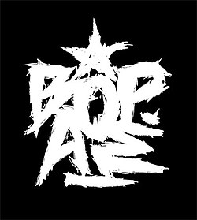

Ιστορία Συγκροτήματος
Τα βόρεια αστέρια ξεκίνησαν ως graffiti group το 1997
αλλά η φιλία των παιδικών χρόνων και η από κοινού αγάπη για τη μουσική οδήγησε
στη σύνθεση του συγκροτήματος το 1999.
Από το 1999, τα Βόρεια Αστέρια πάγουν και γράφουν μονοί τους την μουσική τους.
Την παραγωγή των κομματιών έχει αναλάβει ο Mondi με τον Μικρό Κλέφτη
ενώ συχνά συμμετέχουν ο Dof και ο Aldo. Τη μίξη συνήθως αναλαμβάνει ο Squeezy Anks.

Κύκλοφορίες Αλμπουμ
Το 2003 κυκλοφορόρησαν ανεξάρτητα οι πέντε πρώτοι δίσκοι τους, ως αποτέλεσμα των προηγούμενων χρόνων προετοιμασίας.
Μέχρι το 2010, κυκλοφόρησαν άλλα επτά άλμπουμς.Τα Βόρεια Αστέρια είχαν απορρίψει τις προτάσεις των δισκογραφικών εταιριών.
Τα περισσότερα άλμπουμς τους έχουν κυκλοφορήσει ελευθέρα, ενώ κάποια είχαν αρχικώς κυκλοφορήσει με μια ελάχιστη συμβολική τιμή.
Ωστόσο, μέσα στο 2010, αποφάσισαν να συνεργαστούν με μια ανεξάρτητη ραπ δισκογραφική εταιρία, την Ηχοκρατορία.
Έτσι, τον Δεκέμβριο του 2010 κυκλοφόρησαν τον πιο πρόσφατο δίσκο τους, με τίτλο 5 Αστέρων.